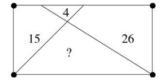

Янз бүрийн бодлогууд
Бодлого \(1\) (Konhauser 2013)
Бүхэл тоонуудын хоосон биш \(S\) олонлогийг авч үзье. Хэрвээ ямар ч бүхэл \(n\) тооны хувьд дараах гурван тооны аль нэг нь \(S\)-д багтдаг бол бүгд \(S\)-д багтдаг:
- \(n\)
- \(2n + 9\)
- \(2n + 25\)
Тэгвэл \(S\) нь бүх бүхэл тоонуудын олонлог мөн үү?
Бодлого \(2\) (Konhauser 2013)
Тэгш өнцөгт координатын хавтгайд өгөгдсөн \(A = (4, 0), B = (0, 3), C = (0, 0)\) цэгүүдийг холбосон \(\triangle ABC\)-г авч үзье. \(P,Q\) цэгүүд нь \(\triangle ABC\)-ний тал дээр оршдог ба \(PQ\) шулуун уг гурвалжны талбай болон периметрийг хагасаар нь хуваадаг. Тийм \(P,Q\) цэгүүдийн бүх боломжит хосыг ол.
Бодлого \(3\) (Konhauser 2013)
\(a_0\) нь эерэг рациональ тоо. Бүх бүхэл тоо \(n \geq 0\)-ийн хувьд, \(k_n\) нь \(a_n - \frac{1}{k_n} > 0\) байх хамгийн бага эерэг бүхэл тоо байг. Хэрэв \(a_{n+1} = a_n - \frac{1}{k_n}\) бол хязгааргүй олон \(n\)-ийн хувьд \(\frac{1}{a_n}\) тоо бүхэл байж чадах уу?
Бодлого \(4\) (Konhauser 2024)

Тэгш өнцөгтийг хоёр шулуун шугамаар дөрвөн хэсэгт доор үзүүлсэнчлэн хуваав. Зураг дээрх тоонууд нь тухайн хэсгүүдийн талбай бол дөрөв дэх хэсгийн талбайг ол.
Бодлого \(5\) (Konhauser 2023)
\(n\) нь эерэг бүхэл тоо. Хэрвээ \(1, 2, 3, \dots, n\) тоонуудыг ямар нэгэн дарааллаар дараах нөхцөлүүдийг хангасан байхаар жагсааж болдог бол \(n\)-ийг гоё тоо гэе:
- Жагсаалтын эхний хоёр тооны дундаж бүхэл тоо
- Жагсаалтын эхний гурван тооны дундаж бүхэл тоо
- \(\dots\) гэх мэтчилэн
- Жагсаалтын бүх \(n\) тооны дундаж бүхэл тоо байдаг.
Жишээ нь: \(n = 3\) нь гоё тоо юм. Хэрвээ \(1, 3, 2\) гэж жагсаавал:
- Эхний хоёр тоо \(1\) ба \(3\)-ийн дундаж нь \(\frac{1+3}{2} = 2\) (бүхэл тоо)
- Уг гурван тоо \(1, 3, 2\)-ийн дундаж нь \(\frac{1+3+2}{3} = 2\) (бүхэл тоо) болно.
Бүх гоё тоо \(n\)-ийг ол.